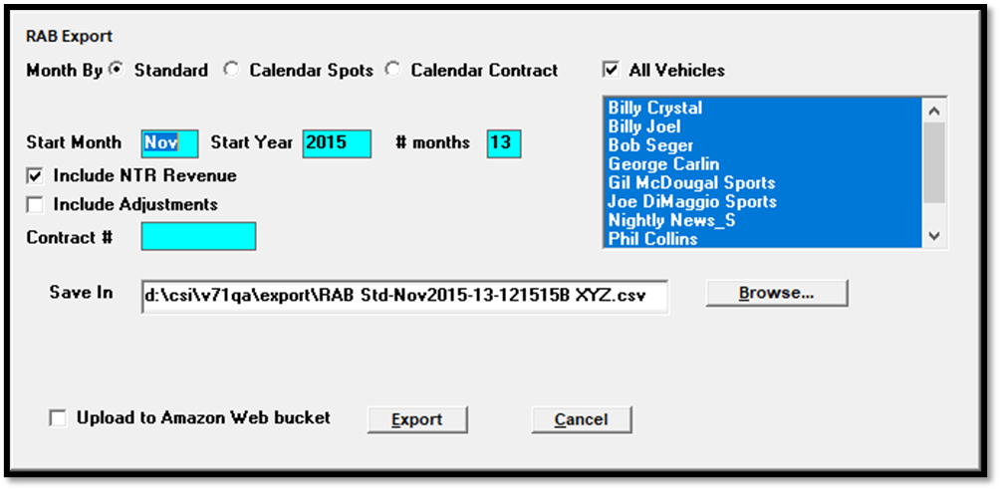

RAB Export
Overview
The RAB export is a revenue export that is compatible with the Radio Advertising Bureau CRM system. It has three ways it can be run: by calendar month, by standard broadcast month, or by calendar spots.
To enable any of the RAB export types, check it on in Traffic Site Options, on the Options tab, in the System Options section (a keycode is required from Counterpoint in order to enable this feature). This will activate the RAB export menu option on the Task menu -> Export screen.
The RAB export can also be set up to run automatically as a scheduled task using Windows Task Scheduler or CSI Server Manager. See the “CSI Server Manager and Task Scheduler” section below for instructions on how to configure it to be run automatically.
The name of the file is “RAB TTT MMMYYYY-#-mmddyyA cccccccccc.csv”. This is what each part of the filename means:
TTT: Std for standard broadcast month, CalSpots for calendar month by spots, and CalCnt for Calendar month by contract.
MMMYYYY: Month and Year, example: Feb2020 (starting month and year of generation).
#: the number of months the export is being run for.
mmddyy: is the date the file is generated.
A: If generated multiple times on the same date, the next letter of the alphabet is appended to the date, starting with “A”.
cccccccccc – abbreviated client name (from Site Options if one exists; otherwise Client Name).
By default, the export file is stored in the Export folder defined in Traffic.ini but this can be changed (instructions appear in a later section below).
The first record in the file is a line of headings in the same comma-delimited format. The second line is the generation date and time.
To run the export from within the Traffic system, go to Task -> Export, and select “RAB” to launch the export selection screen (shown below).

Month By: Choose which method the export is being run by.
Bill Method: On version 8.1 and above, if both the standard broadcast calendar billing cycle and the calendar billing cycle are used, the RAB export can be run by “Bill Method” to gather data by both billing cycle methods, based on the billing cycle used for each relevant contract. For contracts on the standard broadcast billing cycle, the Bill Method will work like the standard broadcast calendar method, pulling data from contracts for unbilled periods, and from receivables/history for billed periods. For contracts on the calendar billing cycle, which is only available for contracts that have digital lines only on them, the calendar contract method will be used, with total line costs (for CPM and Flat Rate lines) averaged over the length of the line for lines that run for multiple months. (This feature is only available on version 8.1 and above.)
Start Month: Enter a start month, such as Jan.
Start Year: Enter a four digit year, such as 2020.
# Months: The number of months to run the export for, from 1 to 24 months (2 years maximum, past or future).
Include NTR Revenue: if selected, NTR and Hard Cost are included.
Include Adjustments: Adjustment transactions can be included for past billing periods.
Include Missed Spots: for Cal Spots only, choose whether to include or exclude missed spots.
Contract #: The export can be run for a single contract for verification and testing purposes by entering the contract number in this field.
Vehicles: Select all vehicles or select specific vehicles from the vehicle list.
Browse: Use the Browse button to choose the save file location.
Upload to Amazon Web Bucket: This checkbox can be checked on to upload the export file to an Amazon Web Bucket during the export process. When this is checked on, additional fields will appear, as shown in the picture below, for configuring the web bucket. The BucketName, AccessKey, Region, and PrivateKey must be entered. The Folder value is optional, and is used to specify a sub-folder within the bucket to upload the file to. The optional Folder value is not specified, the file will be uploaded to the root folder of the bucket. Note that these values are not saved when entered. If exports will be run regularly, use Task Scheduler to run the export, as that method allows the web bucket information to be saved on a special file and reused with each run of the report.

Keep Local File: This is used with the “Upload to Amazon Web Bucket” feature. When “Keep Local File” is checked on, the export file will be saved in the Export folder, and exported to the web bucket. When “Keep Local File” is unchecked, then the local file will be deleted after the upload to the web bucket is successful.
Technical Details
- All alpha fields are in quotes
- Dollar amounts contain decimal points, unless pennies equal to zero. If dollars exceed 999.99, commas are omitted.
- Each record ends in a carriage return/line feed.
- The data will be unsorted.
- The lowest level of detail would be a schedule line within a contract. There can be multiple records for the same control fields (i.e., same contract), due to vehicle and/or salespeople split data.
- Trade 100% orders are ignored. If split cash/trade exists, two records will be generated.
- One record for each split salesperson is generated per month, if applicable.
- The total month’s gross amount is placed in the first salesperson’s record, in addition to the splits for each salespeople on the order. For example, 3 salesperson share in the buy at 50%, 25% and 25. The month’s total gross $ total $1000. Salesperson 1 share is $500, salesperson 2 & 3 share is $250. In a separate column (Gross Direct), salesperson #1 will show $1000, salesperson 2 & 3 will show $0 in that column. Total Split $ will never exceed 100%, even though the contract allows Rev/Comm Share % to exceed 100%. .
- PSA/Promo and Reservation contracts are ignored.
- Information is generated from contracts only (no invoice receivables or spot data).
- Standard Broadcast rules
- All dollar amounts in the future will be obtained from the contracts, as ordered.
- All dollar amounts in past (prior to last billed date) will be obtained from Receivables/History, as invoiced.
- Total of the RAB-Standard export will balance to the Billed and Booked report when using the same criteria.
- Calendar Month by spot rules
- All data comes from spots. If spots are moved to another vehicle, the dollar amounts will appear the under the vehicle is it scheduled in.
- Hidden, billboard, and fill spots are ignored. Canceled spots are included prior to invoicing, and after invoicing the month the canceled spots are in when the "include missed" checkbox is checked on.
- All dollars amounts are assumed As Aired.
- The total of the RAB-Calendar export will balance to the Billed and Booked report when using the same criteria.
- Invoice adjustments: when run to include invoice adjustments, it includes invoice adjustments entered on or prior to the last day of the calendar month that final invoices have been run for, matching the method used by the calendar versions of the Billed and Booked report.
- Calendar Month by Contract balancing results can be compared to Billed and Booked selectivity:
- Calendar
- Start Month &Year
- # Months
- Vehicles
- Include/Exclude NTR
- Include/Exclude Adjustments.
- Transaction Type: For the RAB export by calendar contract and calendar spot, because they pull data from the contract and from spots, respectively, the only transaction types that will ever be shown are invoice adjustments. Records projected from contracts and spots will have no transaction type and will therefore show a blank transaction type value. For the RAB export by standard broadcast calendar, IN, AN, and HI transaction will be shown for billed records.
Structure
|
Field Name |
Description |
|
VehicleID |
Internal vehicle code (vefCode) |
|
ExtProductID |
Product ID set when contract is added by API |
|
Vehicle Name |
Vehicle Name |
|
OwnerID |
Internal owner code |
|
Owner |
Owner name from first row of participant split definition from latest participant split definition |
|
Market |
Market vehicle group Name |
|
Research |
Research vehicle group Name |
|
Sub-Company |
Sub-Company vehicle group name |
|
Format |
Format vehicle group name |
|
Sub-Total |
Sub-Total vehicle group name |
|
Sales Source |
Salesperson Sales source name |
|
Sales Office |
Salesperson Sales Office name |
|
Salesperson |
First Name^Last Name |
|
AgencyID |
Counterpoint assigned Agency ID (agfCode) |
|
AgencyCRMID |
From the agency list screen CRM ID field |
|
Agency |
Agency Name |
|
Agency Credit Status |
Agency Credit status from Agency. Approved, Denied, or Requires Checking |
|
AdvertiserID |
Counterpoint assigned Advertiser ID (adfCode) |
|
AdvertiserCRMID |
From the advertiser list screen CRM ID field |
|
Advertiser |
Advertiser Name |
|
Advertiser Credit Status |
Advertiser credit status from Advertiser. Approved, Denied, or Requires Checking |
|
Product |
Product Name from Product table |
|
Order Type |
C=Standard; T=Remnant; R=Direct Response; Q=Per Inquiry |
|
Cash/Trade |
C = cash, T = trade |
|
Air Time/NTR |
A = Airtime, N = NTR |
|
Primary Competitive |
Primary Competitive name |
|
Secondary Competitive |
Secondary competitive name |
|
Year |
4 digit year: (2000- 2014…..) |
|
Month |
1 – 12 |
|
Gross Direct |
1 to 2100000000. Total billing of all splits. First salesperson of split shows this value; all other records for the split slsp are omitted. |
|
Gross Split Amt |
1 to 2100000000. Slsp split amount. |
|
Net (or TNet) |
1 to 2100000000. Net (or Tnet amount) for slsp split |
|
NTR Type |
NTR type description such as Announcer fees, Affiliate fees |
|
Contract # |
1 - 999999999 |
|
ExtContractNo |
Contract number set for a contract that was added via API |
|
Pacing Date |
Date entered or last date modified for an order (xx/xx/xx) |
|
Transaction Type |
IN = invoice, AN = adjustment, HI = history |
|
Digital Line ID |
Shows the Counterpoint line number for digital line records. Only shown on the Cal Spots and Broadcast version. |
CSI Server Manager and Task Scheduler
The RAB export can be run using the CSI Server Manager utility or as a scheduled task using Windows Task Scheduler. It is also possible to specify different sets of parameters that can be used when running the RAB export in this way so that for example two different versions of the export can be run on a scheduled basis.
CSI Server Manager Setup
One or more RAB sections must be added to the CSI_Server.ini - one for each version of the RAB export that needs to be set up to run automatically. If using multiple RAB sections, they should have unique section names. The name of the RAB section, which is in brackets, should also be added to the "Section Names" line near the top of the CSI_Server.ini. In the example below, the Section Names are RAB1 and RAB2 (although any name can be used as long as the names in the Section Name field match up with the name in brackets in the RAB section). Both RAB1 and RAB2 have been added to the SectionNames field, and information has been added for each RAB configuration.
CSI_Server.ini example:
SectionNames = RAB1, RAB2 ... ...
[RAB1]
Enabled = 1
WeekDays = 1111111
StartTime = 6:00AM
Interval = 86400
Exe = x:\csi\prod\exe\Exports.exe
StartInFolder = x:\csi\prod\data
CommandLine = Auto-RAB Section-RAB Std NTR
KeepProgramRunning = 0
[RAB2]
Enabled = 1
WeekDays = 1111111
StartTime = 6:15AM
Interval = 86400
Exe = x:\csi\prod\exe\Exports.exe
StartInFolder = x:\csi\prod\data
CommandLine = Auto-RAB Section-RAB CalSpots NoNTR
KeepProgramRunning = 0
In this example, the first RAB export will be run at 6AM every day on Monday through Sunday. The second RAB export will be run at 6:15AM every day. The start times are staggered so the two exports are not being run at the same time. The Exe points to the Exports.exe, and the StartInFolder points to the location of the Traffic.ini, typically the Data folder. The CommandLine must have the words "Auto-RAB" (no quotes) followed by a space, followed by "Section-" (no quotes) followed by a unique name that will be used on the Exports.ini (described below). The CommandLine for the first and second exports are different, so that different parameters can be used for the first and second exports.
The Exports.ini must also be placed in the csi\prod\exe folder, where the csi_server.ini should also be located (this file must be created using a text editor if it doesn’t already exist). The exports.ini file will be used to specify the parameters the export needs to use when being run.
Example Exports.ini contents:
[RAB Std NTR]
Calendar=Std
Months=12
NTR=Yes
Adjustments = No
Export=x:\csi\prod\export
[RAB CalSpots NoNTR]
Calendar=Cal
Months=12
NTR=No
Missed = No
Adjustments = No
Export=x:\csi\prod\export
StartPeriod=2
In this example, there are two sections on the Exports.ini. Each section is indicated in brackets and given a name that matches the second part of the corresponding command line from the CSI_Server.ini, which in this case is RAB Std NTR and RAB CalSpots NoNTR. Any string of letters can be used here in brackets as long as it matches the second part of the CSI_Server.ini Command Line that was described above. It is recommended to use something like the example shown for the sake of clarity.
The additional values on the Exports.ini are as follows:
Calendar: Std for standard broadcast calendar; Cal for calendar by spots, and CCnt for calendar by contract.
Months: Default is 24 months if keyword is not found.
NTR: can be set to Yes or No. If not found or invalid, it will default to Yes.
Missed: can be set to Yes or No. Only used by the Cal Spots method.
Adjustments: The Adjustments default will be No. Previously, adjustments were not used for Calendar reporting. Clients who choose to continue to ignore them can take the default.
When adjustments are gathered from receivables, the standard last date billed used will be the basis to determine if the month will be used for adjustments. For example, Nov. 2015 ends on 11/29/15; calendar ends on 11/30/15. If the end date of the calendar month to process is greater than the end date of the last standard month billed, adjustments will be ignored.
Export: define the location where the export file should be created.
StartPeriod: The number of months specified as the “StartPeriod” value will be subtracted from the current month number to determine the starting month number, for whichever calendar type is used for that run of the export. For example, if today’s date is 12/31/20, and the StartPeriod is set to 2, when using the standard broadcast calendar, 12/31/20 is month 1 of 2021, and two months prior to January 2021 is November 2020, so 11/2020 will be the stating month. If today’s date is 12/31/20 and the StartPeriod is set to 2, when using the calendar month (by contract or by spots), two months prior to December 2020 is October 2020, so October 2020 will be the start month. If the StartPeriod value is not specified, or is less than 2, it will use the default value of 1. Note: It’s not necessary to add the StartPeriod line to the Exports.ini if the export needs to start from one month prior to the current month, which is the default functionality. It’s only necessary to add the StartPeriod value if a value greater than one must be used.
StartMonth: an optional parameter. This can be set to a number between 1 and 12, with 1 for January, 2 for February, etc. When used, this setting makes the export always start from the specified month from the current year. If StartMonth is used, it will override the StartPeriod setting. Only one or the other should be used, not both.
After following these setup instructions, a test export can be generated by altering the start time of one of the exports on the CSI_Server.ini to a time in the near future, saving the changes, allowing the export to execute, then retrieving the file from the specified export folder.
Task Scheduler setup
As an alternative to using the CSI_Server_Manager utility, the RAB export can also be set up as a Windows Scheduled Task using Task Scheduler by following these steps:
1. Create a new task in Task Scheduler.
2. Give it a name and specify when and how often it should be run on the Trigger section.
3. In the Actions section, set the Action to "Start a program".
4. Browse to the exports.exe (in csi\prod\exe) for the Program/Script.
5. Enter the command line information described above (in the CSI_Server section) in the arguments field (using the example above, one argument would be Auto-RAB Section-RAB Std NTR).
6. Browse to the location of the Traffic.ini for the Start In field, typically csi\prod\data.
7. Save the Scheduled Task.
8. As a test, you can change the start time of the scheduled task to force it to run then retrieve the export file from the export folder specified on the Exports.ini file.
After that test is successful, change the start time back to the intended start time of the export.
Note that if using Task Scheduler, separate scheduled tasks must be set up for each set of RAB parameters being used. This means following the example above, there would need to be two separate scheduled tasks set up, with one pointing to the Auto-RAB Section-RAB Std NTR command line, and one pointing to Auto-RAB Section-RAB CalSpots NoNTR command line.
Export to Amazon Web Bucket
On version 7.1 and above, it’s possible to export the file to an Amazon S3 Web Bucket, when running the export manually or as a scheduled task.
Manual Export
When running the export manually, to have the export file get exported directly to an Amazon Web Bucket, check the “Upload to Amazon Web Bucket” checkbox. When this is checked on, additional fields will appear, as shown in the picture below, for configuring the web bucket information. The BucketName, AccessKey, Region, and PrivateKey must be entered. Note that these values are not saved when entered. If exports will be run regularly, use Task Scheduler to run the export, as that method allows the web bucket information to be saved on a special file (Exports.ini) and reused with each run of the report.
When “Keep Local File” is checked on, the export file will be saved in the Export folder, and exported to the web bucket. When “Keep Local File” is unchecked, then the local file will be deleted after the upload to the web bucket is successful.
Automatic Export
The automatic export can also be configured to send the export file automatically to an Amazon S3 Web Bucket by adding the following additional fields to the Exports.ini for the automated export:
BucketName: The name of the Amazon bucket you wish to upload the exported file to.
BucketFolder: If the file should be uploaded to a sub-folder of the bucket, specify it here. The folder name is case sensitive, and the folder name entered must match the actual bucket folder name. If there’s a typo, it will either fail to successfully upload or create a new folder. Spaces, commas, ampersands, and underlines are okay to use in the folder name. Slashes and the vertical bar symbol are not allowed. The BucketFolder parameter is optional. If not specified, the file will be uploaded to the root folder of the bucket.
Region: Enter the AWS Region the Amazon bucket was created in. Supported regions: AFSouth1, APEast1, APNortheast1, APNortheast2, APNortheast3, APSouth1, APSoutheast1, APSoutheast2, CACentral1, CNNorth1, CNNorthWest1, EUCentral1, EUNorth1, EUSouth1, EUWest1, EUWest2, EUWest3, MESouth1, SAEast1, USEast1, USEast2, USGovCloudEast1, USGovCloudWest1, USWest1, USWest2
AccessKey: A long term credential for an IAM user or the AWS account root user, used to authenticate requests to AWS.
PrivateKey: A long term credential for an IAM user or the AWS account root user, used to authenticate requests to AWS.
KeepLocalFile: Can be set to Yes or No. Defaults to No if not set. A setting of Yes will retain the local file in the export path specified. A setting of No will delete the local file after a successful upload to AWS.
Note: the Amazon bucket settings (BucketName, Region, AccessKey, PrivateKey, KeepLocalFile) are optional, but if the web bucket will be used, then all settings must be entered correctly, with the exception of BucketFolder and KeepLocalFile, which are entirely optional.
Exports.ini example with Amazon Bucket Section added:
[RAB CalSpots NoNTR]
Calendar=Cal
Months=12
NTR=No
Missed=No
Adjustments=No
Export=x:\csi\prod\export
StartPeriod=2
BucketName=exampleBucket
BucketFolder=myfolder
Region=exampleName
AccessKey=1234
PrivateKey=xyz
KeepLocalFile=No
Cal Spots and Digital Lines
The RAB Cal Spots export includes digital/ad server lines (version 8.1 and above).
For contracts on the broadcast billing cycle, it gathers all ad server lines that are running for at least one day within the export date range and processes each line. For billed standard months, it uses the invoice amount for that standard month, calculates a daily average using the number of days the line runs for in that standard month, then checks the prior standard broadcast month, and if there are calendar month days from the prior month in the next standard broadcast month, it determines how many days are in that period, multiplies it by the daily average, adjusts the prior month, and subtracts that adjustment amount from the month being processed to get an adjusted calendar month total. If the standard month being calculated ends before the calendar month, it uses the daily average from the next month and applies it to the current month to get the calendar month total for that month. It repeats that process for each month that the line runs for.
For unbilled standard months, it starts by determining how much of the line total cost has not been invoiced, then calculates a daily unbilled average, and uses that unbilled daily average to calculate the calendar month totals for the remaining calendar months, based on how many days are in each calendar month for that line.
Once a single digital line has been fully computed for all months like this, it determines which calendar months are actually being requested by the export parameters, and outputs the calendar month values for the requested calendar months.
If the Calendar billing cycle is used, for contracts set to the Calendar billing cycle, each month bills the calendar month amount. The unbilled months are calculated using a daily average for the remaining line cost and the number of calendar days that the line is running for.
Example 1 - unbilled projection:
A digital line has dates 3/27/23-4/2/23 for a contract on the broadcast billing cycle. Broadcast April has not been invoiced yet, so this line is entirely uninvoiced, and it has a total cost of $700. There are 7 days in broadcast April for this line, so it divides the line cost by 7 to get the average of 100. There are five days in calendar March, so it multiplies 5 by the average to get 500 for calendar March to show on the export. For calendar April, it's 2 days times the daily average, for 200 to show on the export.
Example 2 - multi-Calendar month line that has been billed:
A digital line has dates 2/27/23-3/05/23 for a contract on the broadcast billing cycle. Broadcast March has been invoiced for $700. The line runs for 7 days in broadcast March, so it takes the billed amount of $700 and divides it by 7 to get the billed daily average of 100. Broadcast March has 2 days in Calendar February for this line, so to calculate the calendar month February amount, it multiplies the billed daily average by 2, to get 200 for February, which it shows on the export. Broadcast March has 5 days in the March calendar month, so it multiplies the billed daily average by 5 to get 500 for calendar March on the export.
Digital Line Calculation Notes
To assist with understanding how the digital lines are calculated, a checkbox labeled “Include digital average comments” is available when running the manual version of the Cal Spots export. When checked on, the export will include an additional columns to help explain the calculation for each digital line record. This option is unchecked by default.
- Line Number: shows the line number for digital lines. Non-digital lines will show a line number of zero as they work differently than digital lines and do not have line IDs like digital lines do. (This field is also shown on the automated Cal Spots export and the Standard broadcast version).
- Comment
- Billed: shows the amount invoiced
- Billed remainder: shows the billed amount for the month minus what has been subtracted from it for the prior calendar month plus any days included from the next broadcast month that belong in the current calendar month
- Projected: shows the amount projected with the calculated daily average and plus or minus counts of days
- Current Month Average: shows the calculated average for the digital line record for the current month (the month that the record is for)
- Next Month Average: average shows the calculated average from the next month
The Current Month Average and Next Month Average show some of the same information in the “comments” column but separated into separate columns to assist with testing. These averages will only be shown for digital lines, and only when there’s relevant data to include. For example, if a line item start and end date are entirely within the same broadcast and calendar month, then there’s no “next month average” to show for that line, only a “current month average”.